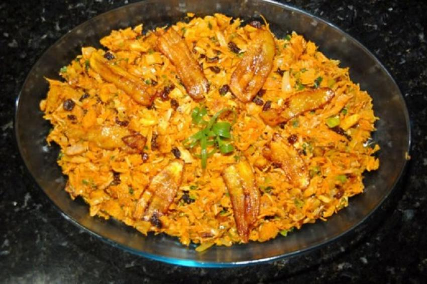
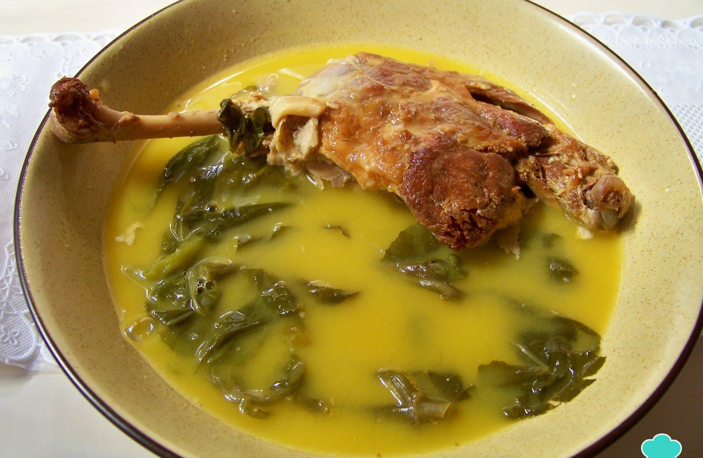
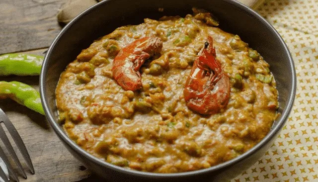
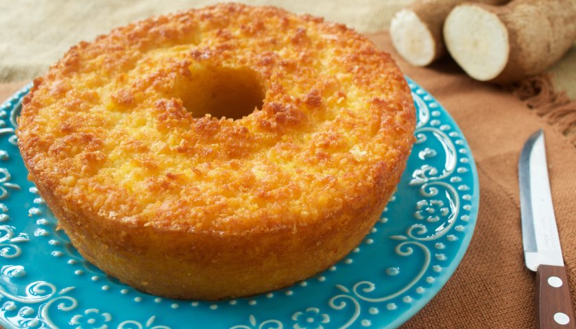

Premiado com uma estrela Michellin pela qualidade da culinária e pelos melhores serviços
Horário
Todos os dias, de 9h até 23h
Nossos Pratos
Ingredientes de qualidade, pratos saborosos

Pirarucu
Uma das receitas mais populares é o pirarucu de casaca, um prato típico do Pará que consiste em um cozido de peixe com farinha de mandioca, leite de coco, pimenta e coentro.
Tacaca
Preparado com tucupi. Coloca-se esse caldo por cima da goma de mandioca, também servida com jambu e camarão seco.

Pato no tucupi
O pato é assado cortado em pedaços e mergulhado no tucupi

Caruru
O caruru é um cozido de quiabos ou carurus que costuma ser servido acompanhado de acarajé ou abará, de pedaços de carne, frango ou peixe, de camarões secos, de azeite de dendê e de pimenta.
Maniçoba Paraense
A Maniçoba é um prato de origem indígena, típico da culinária paraense e amapaense. Tem como principal ingrediente a maniva, a folha da mandioca moída.

Bolo de macaxeira
O bolo de macaxeira é uma iguaria da culinária brasileira. A receita tem origem indígena e está relacionada ao cultivo da mandioca na bacia tropical do Rio Amazonas.